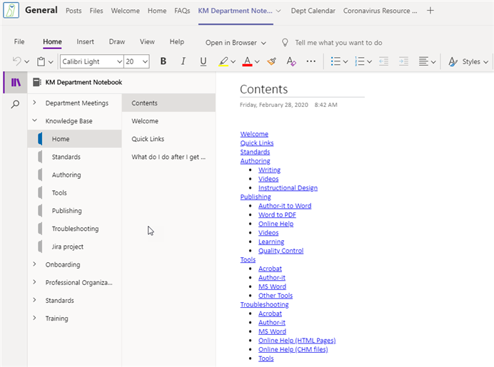

The Knowledge Management department maintains a knowledge base in the department Teams site using OneNote. It includes resources for Author-it, other tools, and department standards and processes.
If you need additional help, the department Teams site includes a form to submit a help desk request to the Knowledge Management administrators. This request does not go to the company's IT department.
The Knowledge Management knowledge base is built in OneNote that contains information to help you use the various knowledge management tools.

You can open the knowledge base from the KM department OneNote by clicking this link.
Searching for information in the knowledge base
Complete the following to search for information:
Open the department OneNote in your local OneNote application.
Enter the search text into the search field at the top right of the OneNote window.
Select the note from the results list.
(Optional) In the search results, click Finished: All Notebooks and use the filters to narrow the results.